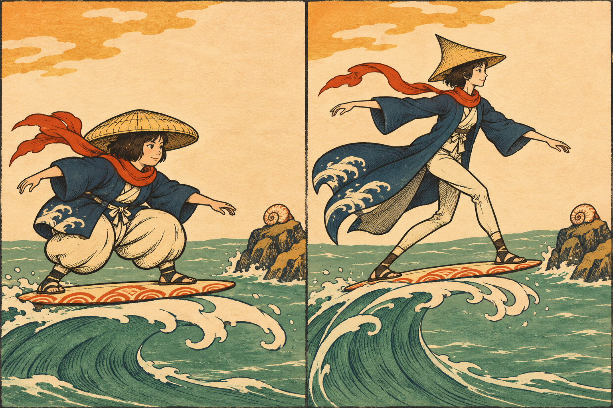
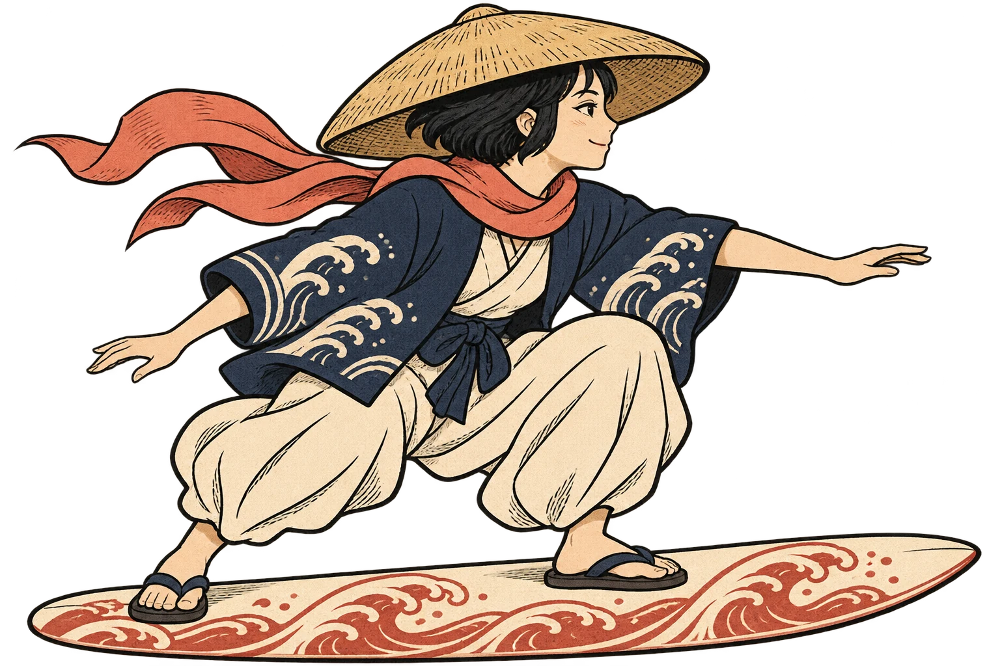
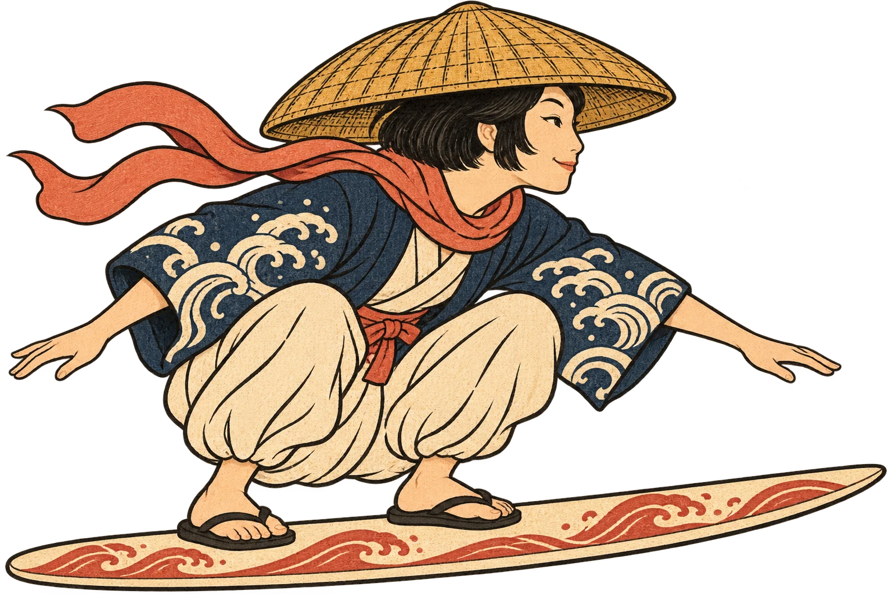
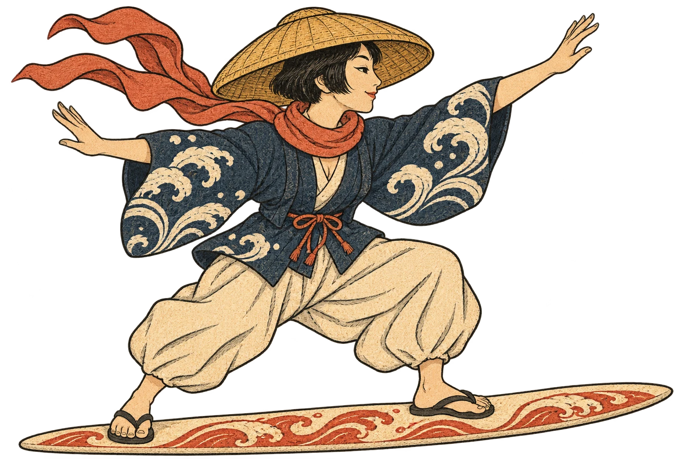
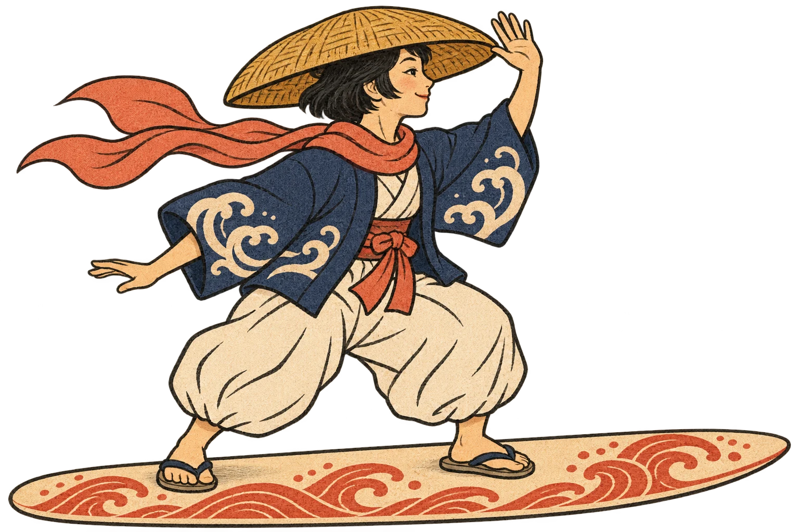

从人物开始，重画这片海。
同一角色、浪、礁石和螺壳的两种构造试样。选择左侧的低重心与饱满衣形：缩小到手机后，帽檐、头脸和膝部依然分得开。右侧长衣与长肢体的流动感更强，但小尺寸下动作间隙较细。

四张关键姿态，覆盖六个动作阶段
滑行使用舒展平衡姿态；蓄力与落水压低重心；起跳、下降使用展开的手臂与随速度变化的板角；抵达港口后挥手。实际碰撞、水线与规则没有改变。




相同物理，两种动作表达
左侧保持单张姿态，只随板角起伏；右侧切换关键姿态。两侧共享同一次模拟：压板、起跃、重新接触水面，循环播放。选用右侧，把力的变化交给人物，落水浪沫只跟随接触点。
素材由内置 imagegen 生成并筛选；动态浪面、礁石、漂木、螺壳与界面为新的可编辑 Canvas / SVG 绘制。原图与提示词记录见仓库的美术说明。查看实机触摸录屏 →